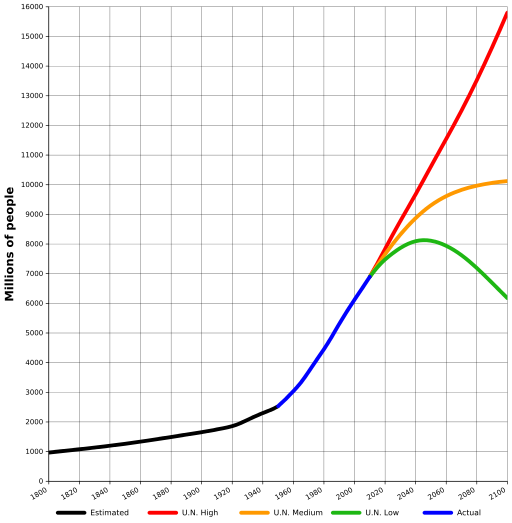
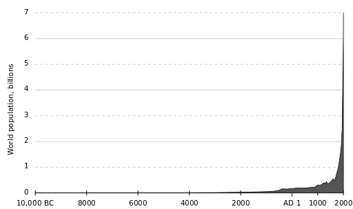

|
Hosted by the courtesy of GitHub |
The stars ASAP


 Durée du voyage intersidéral Résolutions de l'ONU en HTML Bussard Ramjet
|
DWARF : dwarf2xml
ELF : libelf examples Code presentation : ctoohtml |
|
Hosted by the courtesy of GitHub |
The stars ASAP
Durée du voyage intersidéral Résolutions de l'ONU en HTML Bussard Ramjet
|
DWARF : dwarf2xml
ELF : libelf examples Code presentation : ctoohtml |
HomeTranslation : Emmanuel Azencot Author : Emmanuel Azencot Creation : Mon Dec 25 14:29:29 CET 2017 Update: Mon Dec 25 14:29:29 CET 2017 |

|


|

|
"Notre population et notre utilisation des ressources limitées de la planète Terre sont en croissance exponentielle, ainsi que notre capacité technique de changer l’environnement pour le meilleur ou pour le pire. "," Nous sommes en voie de nous détruire par notre cupidité et notre bêtise. Nous ne pouvons pas continuer à nous regarder le nombril sur une petite planète surpeuplée et de plus en plus polluée.". (Stephen Hawking)
La stabilité à long terme requiert que la population demeure à un niveau raisonnable
Nous sommes 7,3 milliard en 2015 et nous pouvons déjà en voir les effets
La réduction de la population résout une grande partie de nos problèmes
Un objectif pour la taille de la population
Je supplie les femmes de s'interroger sur les raisons pour lesquelles elles veulent des enfants
Les traductions sont les bienvenues. Merci de m'envoyer votre travail, sans décoration dans un format rustique, .txt, .html, .rtf, word 95 c'est bien. Je garderais votre contribution anonyme, autant que faire se peut, si vous le souhaitez.
Si vous avez une bonne idée ... Réfléchissez y !
2030: The “Perfect Storm
Scenario”
No really, how sustainable are we ?
Causes effects solutions of Overpopulation
What Level of Human Population Is Sustainable?
Population and Sustainability: Can We Avoid Limiting the Number of
People?
Nine Population Strategies to Stop Short of Nine Billion
Why "Population Matters" is wrong
Why Population Matters
Sans quoi ce sera les épidémies, les famines, les guerres etc ... Même si nos outils technologiques peuvent retarder une partie de ces fléaux, maintenir durablement un déséquilibre rend inévitable une crise plus importante. La Terre est bornée et ses ressources également. Le nombre d'humains sut Terre doit et restera donc limité.
Population mondiale 1800 - 2100 |
Population mondiale -10 000 - +2000 |
|||
| |
 | |
 | |
| Chart from wikipedia | Chart from wikipedia |
Le modèle de prédation très simplifié Lynx-lapin suffit à comprendre à quel point la situation actuelle peut être trompeuse. Même très simple, ce modèle de prédateur-proie (1) a des comportements complexes qui correspondent à une équation différentielle non linéaire lorsqu'il s'agit de prédire les population respectives. Ce système a deux solutions stables. L'une est se caractérise par l'extinction de la proie suivie par son prédateur. L'autre solution stable est, heureusement, moins catastrophique, mais n'est jamais atteinte car le système tend à osciller autour d'elle.
Dans notre cas, nous avons déjà chassé beaucoup de proies jusqu'à l'extinction. En général l'extinction est une cause indirecte de l'activité humaine, notamment l'agriculture (2, 3). Mais dans les océans, la sur-pèche est la cause directe de la disparition des poissons. Depuis 1970, nous avons perdu la moitié des stocks de poissons et de nombreuses espèces sont proches de l'extinction (4).
1 Lotka–Volterra equations
2 SCAR Foresight Group Agriculture and environment
3 Agriculture, Ecosystems & Environment
4 Living Blue Planet Report Species, habitats and human well-being
Sur les baleines, sur les oiseaux, sur la pluie, sur l'ozone, sur les poissons (morue, thon), insectes (abeilles), sur les forêts, sur le climat, les récifs coralliens, sur le sable, et ainsi de suite. A ce stade, nous avons assez de données scientifiques qui montrent l'effet de cette pression au niveau global Est-ce que nous avons déjà franchi la ligne rouge ? C'est à chacun de se faire son idée et de faire ses choix. Dans tous les cas, l'accroissement continu de la population mondiale nous donnera rapidement la réponse.
La pression de prédation est due à deux facteurs : le nombre d'humain fois la consommation individuelle.
Comme nous ne voulons pas réduire notre niveau de vie, il ne reste pas d'autre choix que de diminuer le nombre de gens. Quelque soit les solutions écologiques que nous pourrons trouver, ce ne sera jamais suffisant pour satisfaire les besoins nécessaire à une population en croissance qui attend une amélioration de ses conditions de vie. Le pire, c'est que la plupart des effets observé aujourd'hui proviennent d'une petite partie de la population sur un court laps de temps. Cette partie à bien grandie et contribue maintenant efficacement à la ruine de l'humanité.
Avec une simple projection linéaire, la population en 2100 donne 16 milliard d'habitants sur Terre. Durant les dernière 150 000 ans les humains ont été contraints, la plupart du temps, par les ressources, mais au cours des 200 dernières années nous avons amélioré notre capacité à obtenir ce dont nous avions besoin. Depuis, la population explose. Du coup, au lieu de profiter des bénéfices de ces progrès la majorité des humains continuent de lutter pour leur survie.
World Population Growth Charts MORE Than Exponential
Chart of the Day: World Population Growth vs History of Technology
Une diminution de la population résoudrait une grande parties de nos problèmes, le chômage, la pauvreté, la pollution, la surexploitation, les épidémies, les encombrements, les guerres qui sont de près ou de loin le résultat de la surpopulation. La plus grande parties de nos efforts sont consacrés à la recherche de solutions pour s'accommoder d'une population croissante comme l'économie, la technologie, l'écologie etc ...
D'où vient le besoin de produire plus de légume ? plus de viande ? La tribu a un nouveau venu ! Pourquoi avons nous besoin d'un égout : il y a trop de nos déjections dans les environs ... Maintenant, on entend "Nous avons assez de nourriture pour tout le monde ! le problème c'est de la transporter là où il y en a besoin". Faisons des routes et aussi des télécommunication pour prendre les commandes. C'est pourquoi vous avez besoin d'une centrale nucléaire. Le réchauffement climatique ...
D'un autre coté, la politique de l'enfant unique chinoise a montré qu'une réduction rapide a ses inconvénients. Le principal, "4-2-1 phenomenon" met en avant qu'un seul individu a à sa charge ses deux parents et ses quatre grands parents. C'est le lourd héritage que nous auront à porter si nous voulons que nos enfants vivent mieux que nous. Nous avons beaucoup de raisons de tomber dans ce schéma de Ponzi à deux étages (1, 2) combiné à la tragédie des biens communs (3). Le chemin pour s'en extraire est difficile.
Du point de vue économique le "4-2-1 phenomenon" est à mettre en parallèle avec la productivité que les hommes ont atteint. Bien sûr, le secteur artistique, par exemple, pourrait souffrir, mais il n'y a pas de raisons d'avoir peur alors qu'il y a beaucoup de chômage et beaucoup d'employés dans des secteur non vitaux : golf, poker, drogue, boxe et beaucoup d'autre dont l'activité peut être réduite avant de vraiment mourir de faim. La technologie et l'économie libérale nous rend très efficaces et il est donc très peu probable qu'il y ai des problèmes due à une pénurie de main d'œuvre.
Il n'y a pas de lien particulier entre le PIB par habitant et la taille de la population. Ni le Japon, ni l'Europe ne semblent souffrir d'un déclin rapide ou lent de la population. C'est vrai que nous manquons d'expérience dans cette configuration. Mais les maisons sont déjà construites et il n'y en aura pas besoins de nouvelles.
1 La première provient de ce que les parents comptent sur leurs enfants pour leurs vieux jours.
2 "La
seconde pyramide exploite la peur d'un déclin de la population et de
son vieillissement. Sans une population jeune et croissante, nous sommes
persuadés qu'une nation s'appauvrira et perdra sa force.".
3 Croissance démographique et 'tragédie des biens communs
Plutôt que de désigner la surpopulation comme une cause, nous nous contentons d'essayer d'en traiter les conséquences avec pour résultat une population mondiale hors de contrôle. Consultez le UN Millennium Project : pas un mot sur le planning familial, pas un mot sur l'éducation sexuelle, pas un mot sur la contraception. Cela illustre bien notre politique vis à vis du tiers monde. Presque partout, le monde, et particulièrement dans les pays à haut niveau de vie, est surpeuplé, et c'est partout le même refrain qui fait les gros titres : le développement, la croissance la sécurité et la politique.
Même les rares efforts entrepris en Chine et en Inde sont dénigrés (1, 2, 3, 4, 5, 6) en les opposants à la libertés des femmes ou à aux problèmes de retraite. Ces pays font de gros efforts pour maitriser leur démographie et obtiennent des résultats. Comparez la pyramide des ages du Bangladesh et celle de l'Inde avec celle du Pakistan ou le planning familial est inexistant. Même si ce n'est pas idéal, au moins ils visent la cause réelle.
Le silence sur la taille de la population est tel que personne ne sait qu'en penser. La plupart d'entre nous tiendrait compte des orientations de la société, alors pourquoi ne pas dire qu'il n'y a pas besoin de bébés et donner les raisons ?
Passer de l'optimisme à la panique ne constitue pas une politique cohérente. Il serait préférable de se mettre d'accord sur une taille de population qui conserve une marge raisonnable et d'essayer de l'atteindre, sans se faire la guerre.
Il existe très peu de publications (7, 8, 9) qui essayent d'évaluer la taille optimale de la population. En dehors du problème de la survie, nous devons aussi nous demander combien nous souhaitons être dans cent ans et dans mille ans. Que va-t-on faire de Mars ? un jardin d'Éden ou une Marsvelas ?
1 India’s Lethal Birth Control
2 Women’s deaths reflect mindset from 1975 state of emergency
3 Birth Control: Still Sterilization
4 First one child, now two - but China's birth control policy is here to stay
5 Violent population control continues in China
6 Population Control Programs China
7 How Many People Can Earth Support ?
8 Sustainable Population Levels Using Footprint Data
9 Optimum population
Nous sommes, en fait, dans la vallée des larmes et de l'ombre de la mort. "Il n’existe rien de constant si ce n’est le changement" disait Bouddha, “Il y a plus de larmes versées sur la terre qu'il n'y a d'eau dans l'océan”. Quoique vous fassiez, il est certain que vos enfants vont souffrir, auront peur de la mort et mourront.
Le désir, l'amour, les sentiments, la séduction, la famille, la sexualité, tous pointent vers un seul objectif : les enfants. Même si ce n'est pas spécialement votre souhait, ils vous condamnent à porter une chose qui grandit dans votre ventre et qui va vous mettre en grand danger pendant que vous serez enfermée dans une camisole chimique.
Nous somme poussés à faire cela par le processus de sélection darwinien qui a modelé notre chimie puis notre esprit depuis des milliard d'années, ce qui fait de la procréation une formidable expérience de drogues.
Envers nos parent et nos ancêtres, nous pensons que nous avons une dette parce que nous n'existerions pas s'il n'avaient pas fait exactement ce qu'ils ont fait. Rompre cette chaine est une idée insupportable et cela agit comme une chaine de lettres.
Avoir des enfants répond également au besoin d'avoir quelqu'un qui aura la charge de s'occuper de nous quand nous seront vieux. C'est une sorte de retour sur investissement imposée à nos enfants qui n'ont pas d'autre choix que de faire de même, exactement comme dans une pyramide de Ponzi.
Les enfants peuvent aussi être un moyen d'avoir une position sociale. Quoique vous en attendez, cela aura un prix, souvent votre liberté mais cela peut aller jusqu'à risquer votre vie ou vous battre pour votre survie pour vous et vos enfants pour le reste de votre vie.
S'il vous plait mesdames, ne vous sentez pas obligées.
Merci à kat, nat et fanfan pour leur écoute et leurs lectures.
|
Hosted by the courtesy of GitHub |
The stars ASAP
Durée du voyage intersidéral Résolutions de l'ONU en HTML Bussard Ramjet
|
DWARF : dwarf2xml
ELF : libelf examples Code presentation : ctoohtml |
{kind=link}
{kind=link}